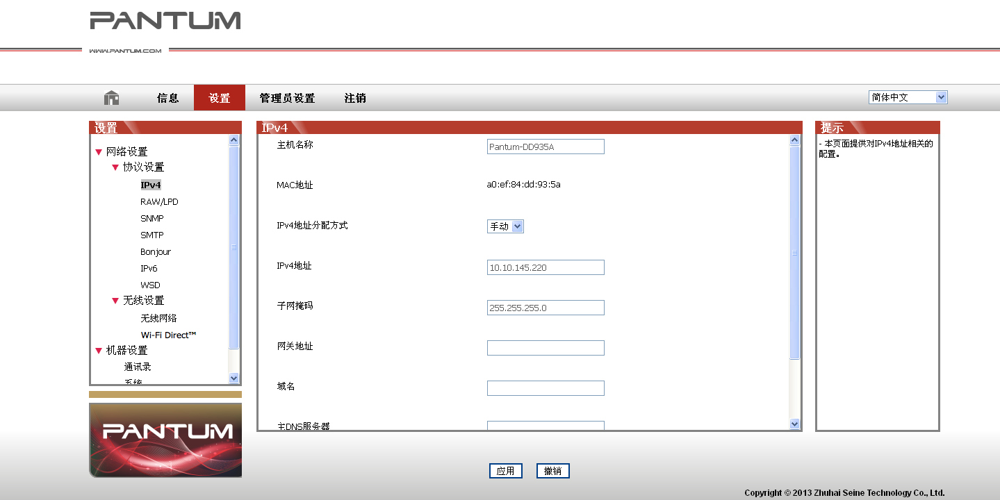

4. 有线网络设置（适用于有线网络打印功能机型）
您可能需要在打印机上设置某些网络参数，可以从内嵌的Web 服务器设置这些参数。
4.1. 设置 IP 地址
打印机 IP 地址可通过 DHCP 功能自动获取，也可手动设置。
| 自动设置
打印机默认开启DHCP 自动设置功能。
1. 将打印机通过网络电缆连接到网络，并完成开机准备。
2. 打印机将自动获得服务器分配的IP 地址。自动获得的IP 地址可能要过几分钟才能使用。
|
|
注：
|
• 如果DHCP 自动获取IP 地址不成功，打印机会自动采用默认的IP 地址：169.254.xx.xx。
• 鉴于 DHCP 的特性，如果打印机长时间不使用或者更换网络接入点，网络自动分配给打印机的 IP 地址可能会变化，导致无法连接打印机，建议启用 DHCP 功能的同时，将网络自动分配的 IP 地址与打印机 Mac 地址绑定。
|
| 手动设置
在 Web 浏览器的地址行中键入 IP 地址，以打开内嵌的 Web 服务器。
1. 在导航栏中点击“设置”，打开设置页面；
2. 选择“网络设置”-“IPV4 设置”；
3. 依次设置“IP 地址分配方式（手动）”、“IP 地址”和“子网掩码”，其他项为选填；
4. 点击“应用”，保存设置。
4.2. 安装打印机到网络
在此设置中，本打印机直接连接到网络，并且可设置为允许网络上的所有计算机直接打印到本产品。
1. 在打开打印机前，先将网络电缆接入打印机网络端口，以将打印机直接连接到网络。
2. 打开打印机，等待控制面板上的状态指示灯显示为准备就绪状态，如下图所示。

3. 将打印机光盘插入计算机。如果软件安装程序未启动，请浏览光盘上的“setup.exe”文件，然后双击运行该文件。
4. 按照安装程序说明进行操作。
5. 继续安装完成。
4.3. 设置网络产品
4.3.1. 查看或更改网络设置
您可以使用内嵌的 Web 服务器查看或更改 IP 设置。
1. 长按控制面板“取消/继续”按钮打印 Demo 信息页，查看打印机的 IP 地址信息。空闲状态下，长按控制面板按钮（如下图），可以打印 Demo 页。
2. 在 Web 浏览器的地址栏中键入 IP 地址，访问内嵌的 Web 服务器。
3. 单击设置选项卡以获得网络信息。可根据需要更改设置。

4.3.2. 设置或更改 WEB 服务器登录密码
使用内嵌的 Web 服务器，设置一个网络密码或更改现有的密码。
|
|
注：
|
• 产品默认用户名为“admin”，初始密码为“000000”。
|
1. 打开内嵌的 Web 服务器，请先登录。
2. 单击“管理员设置”选项卡。
3. 在密码框和确认密码框中键入新密码。
4. 在窗口底部，单击“应用”按钮以保存设置。
4.3.3. 恢复出厂设置
如果要重置产品的所有参数设置，可以进行恢复出厂设置操作，具体做法是：在产品关闭电源的状态下，按住“取消/继续”按钮，打开产品电源，10 秒后松开按钮，待打印机进入就绪状态后完成重置。

{kind=link}
{kind=link}